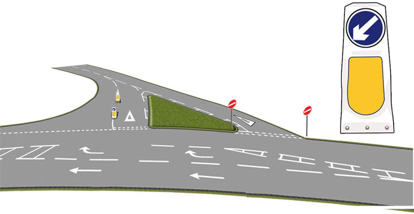
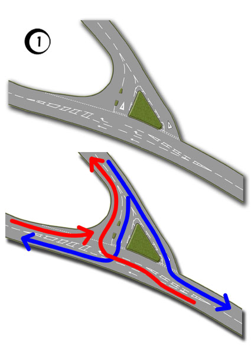
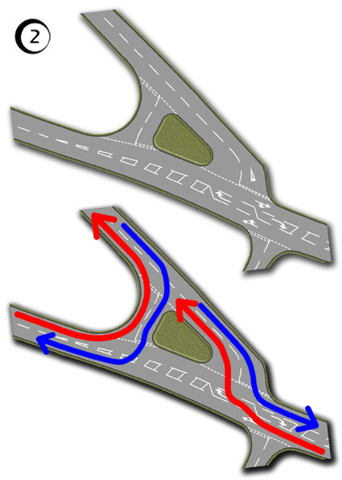

Some Y-shaped junctions are split to make entering and emerging easier.
There can be variations in lane layout so it’s important to be familiar with the road markings and sometimes signs which are placed to help you.
There are numerous road signs and markings helping you to navigate this, potentially confusing junction:
- Right turn lane with arrows
- Double give way lines for exiting the junction and a single broken line for entering
- Advance warning triangles of give way lines
- No entry signs
- Traffic bollards


